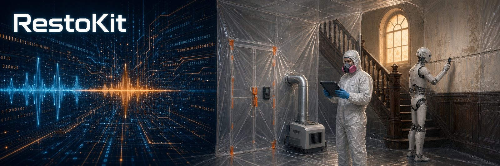

RestoKit
Field tool · water, mold, crawlspace
A field kit for water, mold, and crawlspace restoration techs. It loads into a voice assistant and works alongside a tech on the job.
What it is
RestoKit is a structured JSON kit. It's grounded in IICRC S500 (water) and S520 (mold) principles. It's written the way a senior tech talks a job through from the truck.
It has two layers:
- Phases. A job flow with gates in a set order, so safety-critical steps don't get skipped under time pressure.
- Modules and base science. A reference pool the steps point to for the why: category, remove vs. dry, containment, equipment sizing, drying science, mold cleaning, and crawlspaces.
It doesn't replace years on the job. Its main job is memory. It holds the rare edge cases that don't come up often enough to stay top of mind.
The job flow
- Hold status. Stabilize, protect contents, and document while a job waits on approval, abatement, or a plumber.
- Initial response. Signed work authorization first. Then the safety walk, category check, source control, extraction, and baseline readings.
- Selective demo and cleaning. Remove or dry in place by material, category, and time wet. Demo runs top-down, and hidden water gets chased out of cavities and under flooring.
- Drying and monitoring. Daily readings at the same points every visit. If drying stalls under proper conditions, the kit calls for a root-cause check.
- Verification and closeout. Controls stay up until final moisture checks pass. Then teardown, the customer walkthrough, and the paperwork.
Voice
Each step carries a short line meant to be spoken. A tech asks in one short phrase and gets only that part, not the whole module. Deeper detail stays in the reference layer until it's asked for.
"Full containment before demo. Neg air target: about minus five pascals continuous, or more negative. Quick check: bounce a quarter on the six-mil. If it's flat or flapping, you lost pressure."
How it grows
New lessons come from daily voice job logs. A lesson goes into the kit only after it proves itself on real jobs.
Next up: connecting the field scope to Xactimate so the scope and the estimate line up.
Status
The full kit is private. The public repo shows what it covers and how it's laid out. A demo is available on request, and I can build a company version around a shop's own procedures.